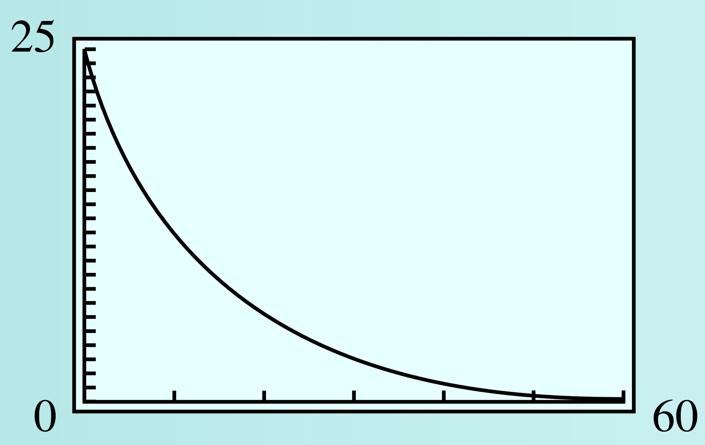

Subsection 4.5 Exponential Growth and Decay
In Section 2, we considered functions of the form
which describe exponential growth when \(b \gt 1\) and exponential decay when \(0 \lt b \lt 1\text{.}\) Exponential growth and decay can also be modeled by functions of the form
where we have substituted \(e^k\) for the growth factor \(b\text{,}\) so that
We can find the value of \(k\) by solving the equation \(b = e^k\) for \(k\text{,}\) to get \(k = \ln b\text{.}\)
For instance, in Example 2.1.1 in Section 2 we found that a colony of bacteria grew according to the formula
We can express this function in the form \(P(t) = 100 \cdot \alert{e^{kt}}\) if we set
Thus, the growth law for the colony of bacteria can be written
By graphing both functions on your calculator, you can verify that
are just two ways of writing the same function.
Example 4.5.15.
From 1990 to 2000, the population of Clark County, Nevada, grew by \(6.4\%\) per year.
- What was the growth factor for the population of Clark County from 1990 to 2000? If the population of Clark County was \(768,000\) in 1990, write a formula for the population \(t\) years later.
- Write a growth formula for Clark County using base \(e\text{.}\)
-
The growth factor was \(b = 1 + r = 1.064\text{.}\) The population \(t\) years later was
\begin{equation*} P(t) = 768,000 (1.064)^t \end{equation*} -
We use the formula \(P(t) = P_0 \cdot e^{kt}\text{,}\) where \(e^k = 1.064\text{.}\) Solving for \(k\text{,}\) we find
\begin{equation*} k = \ln 1.064 = 0.062 \end{equation*}so \(P(t) = 768,000 e^{0.062t}\text{.}\)
Checkpoint 4.5.16.
From 1994 to 1998, the number of personal computers connected to the Internet grew according to the formula \(N(t) = 2.8e^{0.85t}\text{,}\) where \(t = 0\) in 1994 and \(N\) is in millions. (Source: Los Angeles Times, September 6, 1999)
- Evaluate \(N(1)\text{.}\) By what percent did the number of Internet users grow in one year?
- Express the growth law in the form \(N(t) = N_0 (1 + r)^t\text{.}\)
If \(k\) is negative, then \(e^k\) is a fraction less than \(1\text{.}\) For example, if \(k = -2\text{,}\)
Thus, for negative values of \(k\text{,}\) the function \(P(t) = P_0 e^{kt}\) describes exponential decay.
Exponential Growth and Decay.
The function
describes exponential growth if \(k \gt 0\text{,}\) and exponential decay if \(k \lt 0\text{.}\)
Example 4.5.17.
Express the decay law \(N(t) = 60 (0.8)^t\) in the form \(N(t) = N_0 e^{kt}\text{.}\)
For this decay law, \(N_0 = 60\) and \(b = 0.8\text{.}\) We would like to find a value for \(k\) so that \(e^k = b = 0.8\text{,}\) that is, we must solve the equation
Replacing \(b\) with \(e^k\text{,}\) we find that the decay law is
Checkpoint 4.5.18.
A scientist isolates \(25\) grams of krypton-91, which decays according to the formula
where \(t\) is in seconds.
-
Complete the table of values showing the amount of krypton-91 left at \(10\)-second intervals over the first minute.
\(t\) \(0\) \(10\) \(20\) \(30\) \(40\) \(50\) \(60\) \(N(t)\) \(\) \(\) \(\) \(\) \(\) \(\) \(\) Use the table to choose a suitable window and graph the function \(N(t)\text{.}\)
Write and solve an equation to answer the question: How long does it take for 60% of the krypton-91 to decay?
If \(60\%\) of the krypton-91 has decayed, \(40\%\) of the original \(25\) grams remains.
\(t\) \(0\) \(10\) \(20\) \(30\) \(40\) \(50\) \(60\) \(N(t)\) \(25\) \(12.41\) \(6.16\) \(3.06\) \(1.52\) \(0.75\) \(0.37\) - 
\(25 e^{-0.07t} = 0.40(25)\text{;}\) \(~~t=\dfrac{\ln(0.4)}{-0.07}\approx 13.09 \) seconds